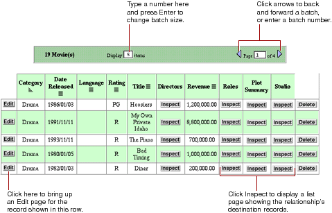
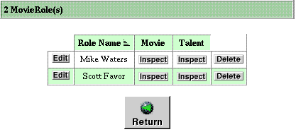
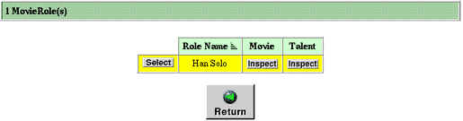

Table of Contents
Table of Contents  Next Section
Table of Contents
Next Section
Table of Contents  Previous Section
Previous Section

Each row in the table represents a record. By default, a batch of ten records are shown in a page. To change the batch size, type a number in the "Display _ Items" field and press Return or Enter. To display additional records in either direction, click the triangle buttons or enter the page number you want to go to.
Each column in the list represents one of the entity's properties. By default, all properties are shown in alphabetical order. You can hide columns and change their order by using the WebAssistant; see "Customizing Your Application With WebAssistant".
The symbols to the right of attribute names represent their sort order:
For properties that represent relationships, an Inspect button appears in the cell by default (DisplayToManyFault). When you click the Inspect button one of two things happen, depending on the type of relationship:
In the above example, the Movie entity's Studio relationship is a to-one relationship to the Studio entity. If you click the Inspect button, an inspect page appears for the Studio entity corresponding to the selected movie; see "Inspect and Edit Pages".
In the above example, the Movie entity's Roles relationship is a to-many relationship to the MovieRole entity. If you click the Inspect button, a list page appears, showing all the roles in the selected movie.

The select component looks a lot like the list page, but instead of the Edit button there is a Select button. The select component occurs in multiple-component pages. In the edit-relationship page you click Select to add a record to a to-many relationship. In the master-detail page you click Select to add a record to an edit component. A select component looks like this:

Table of Contents Next Section